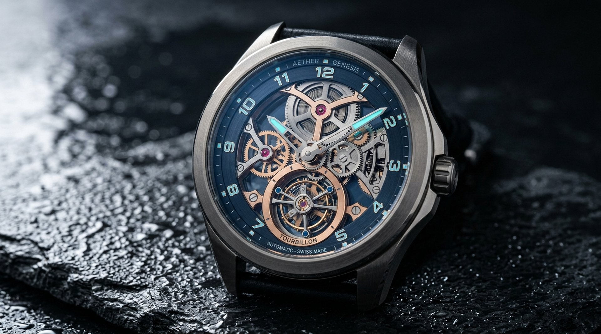

Product / Tech Concept Art
Quantum Chronometer
Macro-style concept artwork of an exposed tourbillon-inspired watch movement on dark wet slate, using controlled studio-style lighting and metallic detail. This is concept art, not product photography.
Suitable Applications
- Luxury product concept presentations
- Brand campaign moodboards
- Industrial-design concept decks
- Horology and tech editorial artwork
- Pitch-deck key visuals
Visual QA Highlights
- Gear, jewel, and bridge details inspected for repeated or malformed patterns
- Metallic gradients reviewed for banding and artificial edge halos
- Droplet and slate textures checked for repetition and smearing
- Macro edges reviewed at 100% crop for ringing and tiling seams